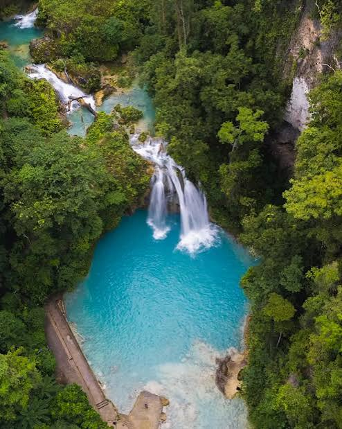
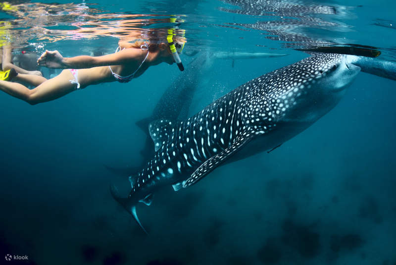

CEBU DISCOVER HUB
EXPLORE BEYOND THE ORDINARY
DISCOVER THE BEAUTY OF CEBU
From beautiful beaches to breathtaking mountains,
Cebu is a destination filled with adventure, culture,
history, and unforgettable experiences.
01 | KAWASAN FALLS

BADIAN, CEBU
Famous for its turquoise waters, beautiful waterfalls,
and exciting canyoneering adventures.
02 | OSLOB

SOUTHERN CEBU
Known for its coastal scenery, rich marine life,
and memorable ocean adventures.
MORE PLACES TO EXPLORE
03. Temple of Leah
04. Sirao Flower Garden
05. Magellan's Cross
06. Fort San Pedro
07. Bantayan Island
08. Malapascua Island
09. Simala Shrine
10. Osmeña Peak
CEBU DISCOVER HUB
DISCOVER CEBU. EXPERIENCE SOMETHING EXTRAORDINARY.